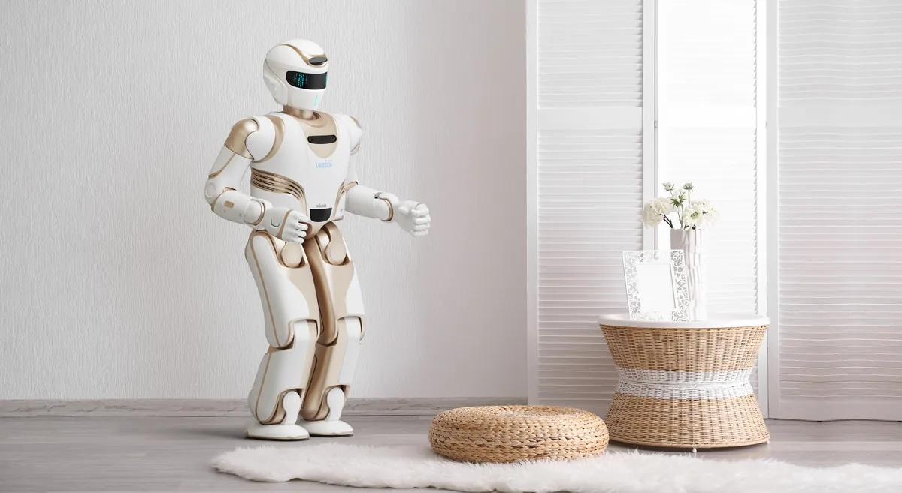

China Ships 97% of the World's Humanoids
The export machine behind the boom.
China has about 320 million people aged 60 and above. The humanoid industry is now aiming at them: UBTECH reports Walker X deployed across 237 nursing-home chains with ¥420M (RMB 4.2B in 2025 care revenue, +89.1% YoY). Fourier, Leju and a new wave of care-focused startups are racing to be the third "caregiver" in the room.

When China's "Two Sessions" in March 2026 argued that humanoid robots must move "from performing to doing real work," the clearest real work was not in a factory. In a care home in Chengdu, Leju's Kuafu humanoid plays tai-chi coach, tells stories and chats with residents. In Hubei's Rongjun Hospital, Guanggu Dongzhi's Lumen U1 logs blood pressure and blood sugar during nurse rounds. And at the head of the pack, UBTECH says its Walker X biped platform is deployed across 237 nursing-home chains, with 2025 care revenue of ¥420M — up 89.1% year on year.
China's population aged 60+ is around 320 million — larger than the US population. Caregiving labor is scarce and aging itself; nursing-home chains are cash-strapped and understaffed. That combination makes China the world's largest laboratory for care robotics, pushed by national policy ("silver economy" programs) and pulled by a genuine labor gap. The question is no longer whether humanoids enter care — it is which tasks they can actually own first.
| Company | UBTECH (优必选) | Fourier (傅利叶) | Leju (乐聚) | Guanggu Dongzhi (光谷东智) | iFlytek (科大讯飞) |
|---|---|---|---|---|---|
| Product | Walker X, Youmai, Wukong | GR-3 "Care-bot", rehab line | Kuafu (夸父) | Lumen U1 | StarFire care AI |
| Deployment | 237 nursing chains; ¥420M care revenue 2025 | 2,000+ rehab institutions in 40+ countries | Chengdu care home (tai-chi, chat) | Hubei Rongjun, Wuhan Donghu hospitals | 217 care institutions connected |
| Focus | Full-line care + industrial | Rehab & medical | Companionship | Wheeled care + AI | AI knowledge layer |
UBTECH has turned elderly care into a reported line of business: Walker X in 237 nursing-home chains; a compact companion robot Wukong that listens to residents' stories and comforts them; and in September 2026, the Youmai (优麦) care edition — billed as China's first bionic medical humanoid, built with Meditech, with male and female versions, designed to "understand medicine and care." UBTECH also pioneered a financing model: a robot-leasing-plus-insurance program with PICC, piloted in Jiangsu and Zhejiang and covering roughly 143,000 seniors.
Fourier Intelligence approaches care through medical-grade rehabilitation: its robots are in 2,000+ institutions across 40+ countries, including 300+ hospital departments in China, with the "Smart Rehab Harbor" deployed at Shanghai 7th People's, Zhejiang University 2nd Affiliated Hospital and more. Its GR-3 humanoid (CES 2026 debut) is explicitly positioned as a "Care-bot" for homes, factories and eldercare, and its rehab units are live at Shanghai International Medical Center and Fujian University of Chinese Medicine. In June 2026, Malaysia's state social-security rehab center (PERKESO) switched on Fourier's system — a state-level export win.
Leju's Kuafu shows the "soft entry": companionship, group exercise, storytelling — zero-risk tasks that build trust before heavier roles. Startup Guanggu Dongzhi pushes a medical angle: its wheeled humanoid Lumen U1 carries a care-AI model, records vitals during rounds, and uploads data to the cloud — already in trials at Hubei Rongjun Hospital and Wuhan Donghu Hospital. iFlytek supplies the AI layer, with its StarFire care-knowledge graph connected to 217 care institutions.
Industry analysts argue the first scaled tasks will be the "eyes, ears and voice" of care — not the muscles. The economics support it: a ¥100K-class humanoid that chats, monitors and coaches can pay back a nursing chain quickly; one that must safely turn a 70kg patient is years away. Whoever owns the interaction layer first will own the trust — and the contracts.
China's care-humanoid experiment is being watched by every aging economy — Japan, South Korea, Germany, the US. UBTECH's leasing-plus-insurance model, Fourier's state-rehab exports, and the sheer scale of Chinese deployments mean the playbook for "robots in the nursing home" is being written in Shenzhen, Shanghai and Chengdu first.
China has about 320 million people aged 60 and above — a population larger than the United States — making elderly care one of the largest addressable markets for service robots.
UBTECH leads with Walker X deployed across 237 nursing-home chains and ¥420M care revenue in 2025 (+89.1% YoY), plus the Youmai care edition launched with Meditech. Fourier's GR-3 Care-bot, Leju's Kuafu (a tai-chi coach in a Chengdu care home) and Guanggu Dongzhi's Lumen U1 are also in trials.
Today's deployed tasks are companionship, conversation, activity coaching and health-data logging (blood pressure, blood sugar). Heavy physical care — turning patients, bathing, lifting — remains years away; the industry is scaling interaction and monitoring first.
Beyond direct sales, UBTECH partnered with PICC on a robot-leasing plus insurance model already piloted in Jiangsu and Zhejiang, covering about 143,000 seniors — a template for making robots affordable for care institutions.
The export machine behind the boom.
The pillar guide behind every deployment.
Who is building, selling and deploying.
The joints that move care robots.
Company profiles, product pages and supplier analysis for China's robotics ecosystem.